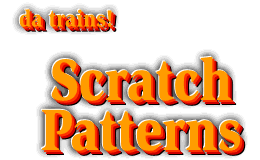

ScratchPatterns is a project that my wife Katy and I were working on. What we wanted to do was create a method of constructing scale models of structures with instructions and a list of materials that were as easy to use as dress patterns. There were to be plans in all major scales from N to G.Unfortunately, things never came together and this project has been shelved.